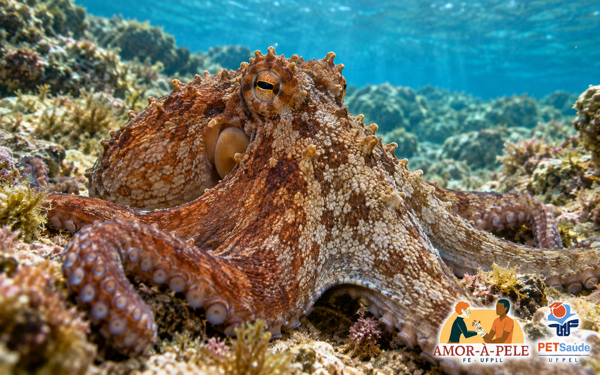
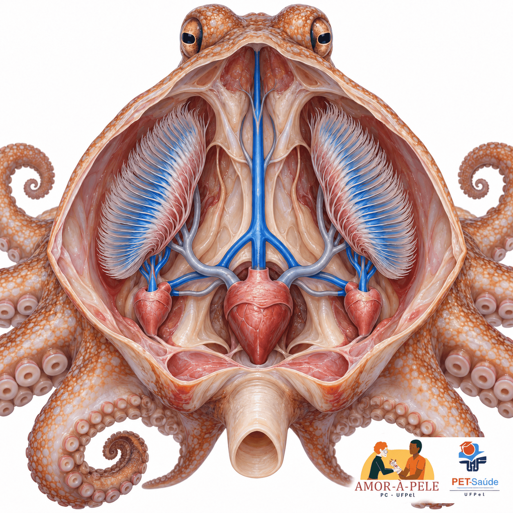
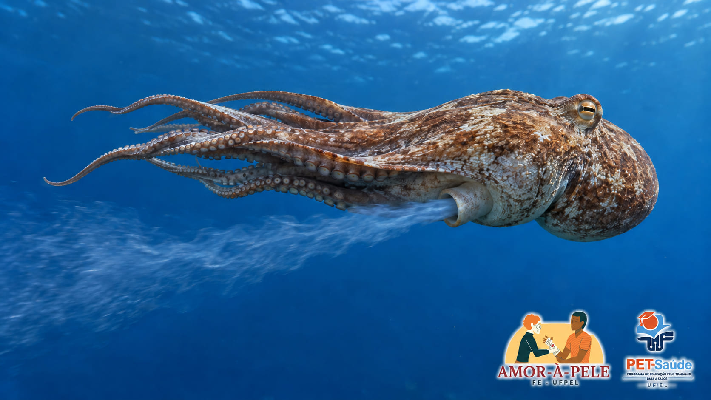
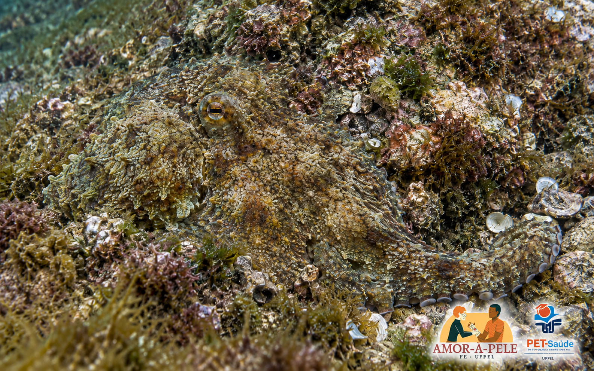
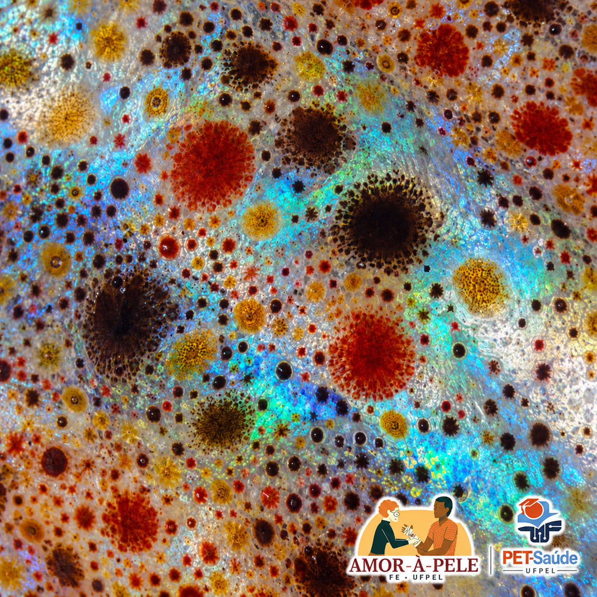
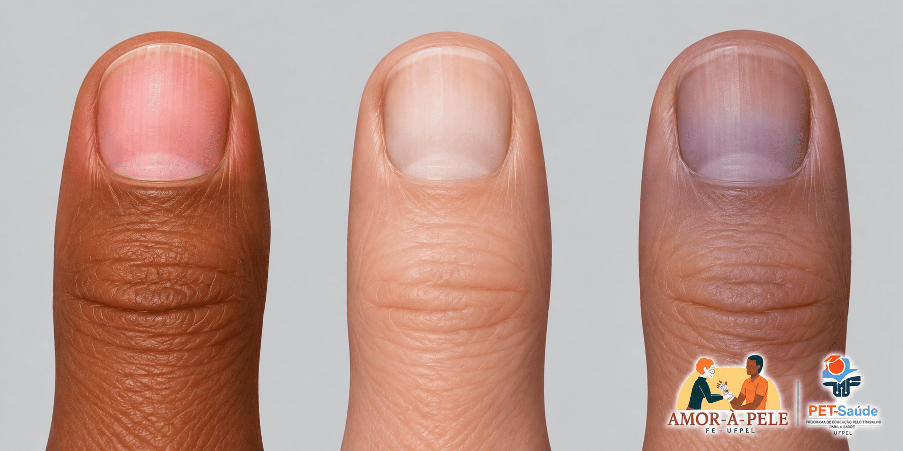
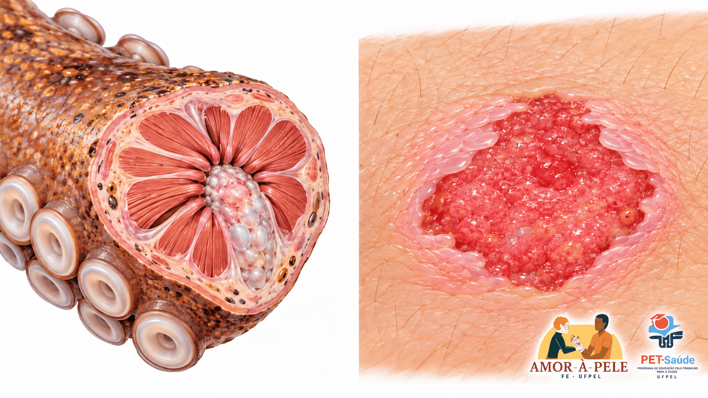
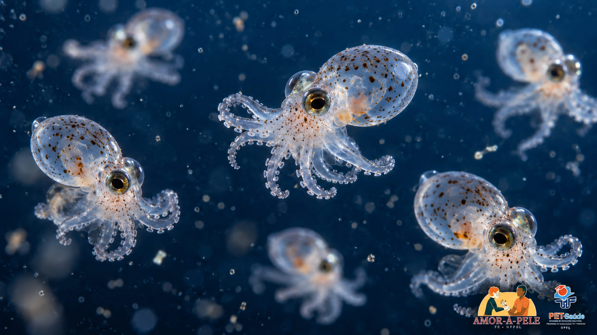
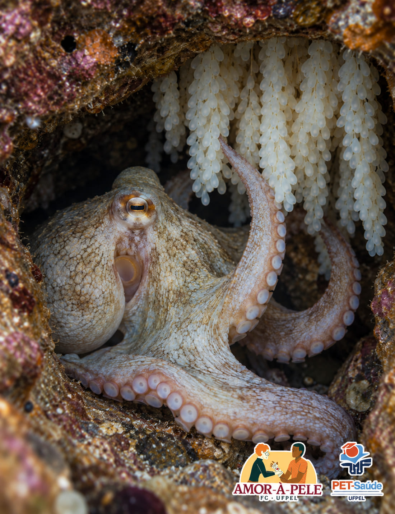

Coração e pele: o polvo diante do ser humano
Três corações, sangue azul e uma pele comandada pelo cérebro. Simulações para entender débito cardíaco, transporte de oxigênio, cor da pele e cicatrização comparando dois projetos de corpo muito diferentes.

Dois órgãos, duas estratégias
No ser humano, a cor da pele é sobretudo um espelho do sangue: palidez, rubor e cianose contam como o coração e os pulmões estão funcionando. No polvo, a cor da pele é um espelho do cérebro: milhares de pequenos órgãos de pigmento obedecem a nervos e mudam em frações de segundo[4,6].
O ponto em comum é o oxigênio. O sangue do polvo carrega cerca de cinco vezes menos O₂ que o nosso[1,3], e uma pele que se repara precisa de oxigênio chegando ao tecido[7]. A página começa pelo coração e termina na pele, inclusive quando ela se rompe.
Ponto de partida: matéria do El Confidencial sobre o sangue azul e os três corações do polvo[8], verificada e ampliada com a literatura científica.
Simulação: os dois corações batendo lado a lado
Os batimentos seguem a frequência calculada em tempo real. O traçado mostra a pressão na aorta dos dois animais na mesma escala, em mmHg.
Polvo-comum Octopus vulgaris, valores por kg
Ser humano adulto de 70 kg, valores por kg
| Parâmetro | Polvo | Humano | Como ler |
|---|---|---|---|
| Frequência cardíaca (sistêmico) | O polvo quase não acelera no esforço. | ||
| Volume sistólico por kg | É aqui que o polvo ajusta o débito. | ||
| Débito cardíaco por kg | DC = FC × VS | ||
| Pressão aórtica (sist./diast.) | Polvo medido em cmH₂O; 1 cmH₂O ≈ 0,74 mmHg. | ||
| P50 (afinidade pelo O₂) | P50 maior = afinidade menor = solta O₂ com mais facilidade. | ||
| Saturação arterial / venosa | Diferença = fração extraída pelos tecidos. | ||
| Conteúdo arterial de O₂ (CaO₂) | Inclui O₂ dissolvido no plasma. | ||
| Diferença arteriovenosa de O₂ | O₂ entregue por 100 mL de sangue. | ||
| Oferta de O₂ (DO₂) por kg | DO₂ = DC × CaO₂ | ||
| Consumo de O₂ (VO₂) por kg | Princípio de Fick: DC × (CaO₂ − CvO₂) |
Curvas de dissociação do O₂: o retrato da afinidade
Como ler: a curva de dissociação é o gráfico da afinidade. Ela mostra quanto da proteína está ligada ao O₂ em cada pressão. Curva deslocada para a esquerda = afinidade maior (P50 menor, segura mais o O₂); para a direita = afinidade menor (P50 maior, solta mais o O₂). Veja a explicação completa em “Afinidade: segurar e soltar”.
Troque o eixo para "mL de O₂". Em porcentagem as curvas parecem primas; em conteúdo, a do polvo achata perto do chão. O ponto venoso fica abaixo da curva desenhada (que usa o pH arterial) porque o sangue venoso é mais ácido: é o efeito Bohr em ação.
Modelo didático. Frequência, pressões e efeito da temperatura do polvo seguem Wells[9,10]; a curva usa a equação de Hill com P50, cooperatividade e efeito Bohr da literatura de cefalópodes[11,12,13]. No humano, o consumo de O₂ é fixado pela atividade e o sangue venoso é calculado pelo princípio de Fick[3]. A taxa de acúmulo da dívida de O₂ durante o jato é ilustrativa; o teto de ~22 mL O₂/kg é medido[10].
Três corações, dois circuitos em série
Os dois corações branquiais ficam na base de cada brânquia e empurram o sangue venoso através delas. O sangue já oxigenado chega aos átrios do coração sistêmico, que o lança pelas aortas para o corpo[14].
A lógica lembra o nosso coração direito e esquerdo, só que separada em órgãos distintos. Em repouso, o polvo de cerca de 500 g a 22 °C bate 40–50 vezes por minuto, com pressão aórtica de 40/15 cmH₂O[9]. Quando precisa de mais sangue, quase não acelera: aumenta o volume sistólico[9,10].

Manto. Bolsa muscular que envolve as vísceras e as brânquias. Ao contrair com força, expulsa a água pelo funil e produz o jato; essa mesma pressão dificulta o retorno do sangue aos corações[10].
Brânquias. Onde a hemocianina recebe oxigênio da água. Sem as bombas auxiliares, o sangue não atravessaria esse leito com pressão suficiente[14].
Corações branquiais. Um na base de cada brânquia. Recebem o sangue venoso, ainda quase incolor, e o empurram através das brânquias[14]. Continuam batendo quando o coração sistêmico para no jato.
Coração sistêmico. Recebe o sangue oxigenado das duas brânquias e o lança no corpo. Em repouso bate 40–50 vezes por minuto num polvo de ~500 g a 22 °C[9]; no esforço, aumenta o volume sistólico em vez da frequência[10].
Veia cava. Traz o sangue de volta do corpo e se divide em direção aos corações branquiais. É ela que colapsa quando a pressão do manto sobe demais[10].
Aortas. Saem do coração sistêmico em direção à cabeça e ao abdome. Foi na aorta dorsal que Wells mediu as pressões de 40/15 cmH₂O em repouso[9].
Esquema simplificado, sem escala. Toque nas partes ou nos botões.
Hemocianina e hemoglobina: duas soluções para carregar oxigênio
A hemoglobina humana fica dentro das hemácias, usa ferro e cada molécula leva 4 O₂[3]. A hemocianina do polvo é uma proteína gigante dissolvida no plasma; cada sítio liga O₂ entre dois átomos de cobre e cada molécula pode levar até 70 O₂[2].
Ainda assim, por volume de sangue, o polvo carrega muito menos. Em Octopus dofleini, a capacidade média foi de 3,06 mL de O₂ por 100 mL[1]. A cor também engana: só a hemocianina ligada ao oxigênio é azul. Sem oxigênio, ela é praticamente incolor. Na simulação, o sangue venoso do polvo aparece acinzentado por isso.
O trunfo da hemocianina não é carregar muito. É descarregar quase tudo quando o tecido acidifica.
Em termos de afinidade: quando o tecido fica ácido, a afinidade da proteína pelo O₂ cai, a curva de dissociação se desloca para a direita e o oxigênio é liberado. É o efeito Bohr. Na maioria das hemocianinas de cefalópodes estudadas, o coeficiente de Bohr fica abaixo de −1[11], contra cerca de −0,48 na hemoglobina humana: a mesma queda de pH muda muito mais a afinidade da hemocianina. A sensibilidade ao pH também muda com a temperatura[12]. No coração isolado de O. vulgaris, a hemocianina liberou cerca de 70% do O₂ ligado ao atravessar a parede do ventrículo[15].
O frio tem o efeito oposto: a afinidade da hemocianina aumenta quando a temperatura cai, a curva vai para a esquerda e a liberação de O₂ para os tecidos fica mais difícil[2]. Polvos antárticos compensam isso com uma hemocianina de afinidade mais baixa[13].
Afinidade: segurar e soltar
Afinidade é a força com que a proteína (hemoglobina ou hemocianina) segura o oxigênio. Pense numa mão segurando uma bolinha: com afinidade alta, a mão aperta forte, pega fácil e custa a soltar; com afinidade baixa, segura de leve e solta fácil.
A medida é o P50, a pressão de O₂ em que metade da proteína está ligada ao oxigênio. A leitura é inversa: P50 baixo = afinidade alta; P50 alto = afinidade baixa. A curva de dissociação é o desenho dessa afinidade: quando a afinidade muda, a curva inteira se desloca para a esquerda ou para a direita.
O ideal é segurar bem no pulmão ou na brânquia e soltar bem no tecido. Mova o controle e acompanhe quanto O₂ é entregue entre o pulmão (100 mmHg) e um tecido (30 mmHg).
Afinidade normal: equilíbrio entre carregar e entregar.
Curva didática (equação de Hill, n = 2,7) com a hemoglobina humana como exemplo; P50 normal de cerca de 27 mmHg[3]. Os valores das situações são ilustrativos.
Por que o coração para quando o polvo nada
Wells e colaboradores registraram a pressão na aorta de polvos soltos no aquário. Ao se movimentar, a pressão média, a amplitude do pulso e o fluxo dobraram, enquanto a frequência mal mudou. No jato, o coração sistêmico parou[10].
A explicação proposta é mecânica: a pressão interna do manto supera a pressão venosa, o sangue não retorna e os corações não enchem. A dívida de oxigênio máxima que o polvo tolera é pequena, cerca de 22 mL de O₂ por kg, o que limita o jato a poucos metros[10].

Uma pele que obedece a nervos
Os cromatóforos do polvo não são células soltas como os melanócitos humanos. Cada um é um pequeno órgão neuromuscular: uma bolsa elástica cheia de pigmento, rodeada por fibras musculares radiais, cada uma com seus nervos, sem controle hormonal[6]. Quando os neurônios motores disparam, os músculos se contraem, puxam a bolsa e a mancha de cor se abre em cerca de 100 milissegundos[4].
Por isso o padrão da pele funciona como uma leitura direta da atividade do cérebro[18]. O animal pode escolher, a cada momento, um entre muitos padrões corporais, e trocar quase instantaneamente[6].

De perto: um único cromatóforo
Cada cromatóforo tem uma bolsa elástica de pigmento presa a fibras musculares radiais, por volta de 15 a 25[6]. Quando o nervo dispara, as fibras se contraem, puxam a borda para fora e a bolsa se abre. Quanto maior a frequência de impulsos, mais ela se alarga[6].
Diâmetro da bolsa: 1×

Cromatóforos
Bolsas de pigmento amarelo, vermelho e marrom abertas por músculos. Rápidos e controlados pelo cérebro[4,6].
Iridóforos
Pilhas de plaquetas que refletem a luz e criam cor estrutural. A mudança é bem mais lenta, cerca de 30 segundos[4].
Leucóforos
Espalham a luz e formam um fundo branco difuso, que dá contraste aos padrões[4].
Simulação: monte a pele do polvo
Cada ponto é um cromatóforo. Os controles representam a atividade dos neurônios motores. As papilas mudam o relevo da pele, que os cefalópodes também alteram durante a camuflagem[4].
Desligue o cérebro e acenda a luz: mesmo em pele isolada, os cromatóforos do polvo se expandem com a luz, graças a opsinas na própria pele[19].
A pele que sente a luz
Em pedaços de pele de Octopus bimaculoides separados do corpo, a luz fez os cromatóforos se expandirem. Os pesquisadores chamaram o fenômeno de LACE (expansão de cromatóforos ativada pela luz) e encontraram na pele a mesma via de opsina usada pelos olhos, com sensibilidade máxima por volta de 480 nm, luz azul[19]. Ainda não se sabe quanto isso contribui para a camuflagem no animal vivo[19].
E a pele humana? Um monitor do coração
Nossa pele também muda de cor, mas por outros caminhos. O pigmento é lento: o escurecimento imediato por UVA dura até cerca de 2 horas, e o bronzeado verdadeiro, com produção de nova melanina, só aparece 3 a 5 dias após a exposição[5].
As mudanças rápidas vêm do sangue. A cianose aparece quando há cerca de 5 g/dL de hemoglobina desoxigenada nos capilares[20,21]. Como depende da quantidade absoluta de hemoglobina sem oxigênio, um paciente com anemia grave pode estar hipoxêmico e não parecer cianótico[20,21].

Esta amostra segue os controles do ser humano na Parte 1. A cor é uma representação didática da mistura de hemoglobina oxigenada e desoxigenada, não uma escala clínica.
| Polvo | Humano | |
|---|---|---|
| Quem muda a cor | Neurônios motores e músculos[6] | Sangue capilar e melanina[5,21] |
| Velocidade | ~0,1 s[4] | Segundos a minutos (perfusão); dias (melanina)[5] |
| O que a cor revela | O padrão que o cérebro escolheu, para camuflagem e comunicação[6] | O estado da perfusão e da oxigenação, um sinal clínico[21] |
Quando a pele se rompe
Na natureza, ferimentos nos braços são comuns: cerca de metade dos polvos-comuns capturados na Baía de Nápoles tinha algum braço danificado[22]. Depois de amputar experimentalmente a ponta de um braço, Shaw e colaboradores viram a ferida 64% fechada em 6 horas, com fechamento quase completo em alguns animais entre 6 e 24 horas[22].
O primeiro movimento é mecânico: os músculos ao redor contraem como o cordão de uma bolsa, e células se acumulam formando um tampão sobre a lesão[22,23]. Em feridas de pele de cefalópodes, o fechamento costuma se completar após cerca de 5 dias, com hemócitos assumindo aspecto semelhante a fibroblastos[23].
Na pele humana, a cicatrização segue quatro fases sobrepostas: hemostasia, inflamação, proliferação e remodelação, e esta última pode durar anos[7]. Para a ferida fechar, as fases precisam acontecer na sequência e no tempo certos; a oxigenação é um dos fatores que mais interferem nesse processo[7].

Escala logarítmica. Polvo: dados de amputação experimental da ponta do braço e de feridas de pele de cefalópodes[22,23]. Humano: fases sobrepostas descritas por Guo e DiPietro[7]; a posição das faixas é qualitativa.
Simulação: avance o relógio da ferida
Polvo: fechamento interpolado entre os pontos medidos (64% em 6 h; quase completo em alguns animais em 24 h)[22] e fechamento de feridas de pele em ~5 dias[23]. Humano: esquema qualitativo com durações típicas de livro-texto, que variam muito entre feridas; as quatro fases e a oxigenação como fator crítico vêm de Guo e DiPietro[7].
Um corpo sofisticado que dura um ou dois anos
O polvo-comum vive de 1 a 2 anos[24]. O polvo-gigante-do-Pacífico, um dos maiores, chega a 3 a 5 anos, com estimativas de 4,5 a 5 anos no Golfo do Alasca[25]. No Brasil, a expectativa de vida ao nascer chegou a 76,6 anos em 2024[26].
A razão é o modo de reproduzir: o polvo se reproduz uma única vez e morre (semelparidade). Depois da desova, a fêmea protege os ovos até a eclosão; nas espécies de águas rasas esse cuidado dura de 1 a 3 meses[27].

Quantas gerações de polvo cabem em uma vida humana?
A glândula que encerra a vida
Entre os olhos do polvo há duas glândulas ópticas, comparadas à hipófise dos vertebrados[28]. Em 1977, Jerome Wodinsky removeu essas glândulas de fêmeas de Octopus hummelincki que já cuidavam dos ovos e tinham parado de comer. Elas abandonaram os ovos, voltaram a se alimentar, ganharam peso, algumas acasalaram de novo, e viveram em média 5,75 meses a mais[28,29].
Em Octopus bimaculoides, as mães continuaram comendo por cerca de 8 dias após a desova; depois pararam de repente e, após 3 a 19 dias de jejum, entraram em declínio rápido[28]. Em vez de um único "hormônio da morte", a glândula óptica usa várias vias de sinalização[28], incluindo mudanças no metabolismo do colesterol e na produção de hormônios esteroides[30].

O que a matéria do El Confidencial acerta e simplifica
Ela carrega bem menos O₂ por volume que a hemoglobina[1]. A vantagem está na liberação sensível ao pH[11] e na adaptação a cada faixa de temperatura[13], não na quantidade.
Há polvos polares, mas o polvo-comum vive em águas costeiras temperadas e tropicais. E o frio, na verdade, atrapalha a liberação de O₂ pela hemocianina[2].
A parada está documentada no nado a jato. A causa proposta é a falha de retorno venoso pela pressão do manto, não o esforço em si: ao se movimentar sem jato, o débito dobra sem parada[10].
A matéria fala em mudança "instantânea". Isso vale para os cromatóforos, de controle neural; os iridóforos levam cerca de 30 segundos[4].
O que levar para a prática em saúde
Saturação não é conteúdo
Uma pessoa anêmica pode ter SpO₂ normal e pouco oxigênio no sangue. Reduza a hemoglobina no simulador: a curva de % não se mexe, a de mL achata.
Cianose engana
Ela depende da hemoglobina desoxigenada em g/dL. Na anemia grave pode faltar mesmo com hipoxemia; na policitemia aparece mais cedo[21].
Ferida também é perfusão
Oxigenação é um dos principais fatores da cicatrização[7]. Avaliar a ferida inclui avaliar coração, pulmão e hemoglobina.
Para refletir
Por que o débito do polvo por kg pode ser parecido com o humano, mas a oferta de O₂ é cerca de 10 vezes menor?
Porque DO₂ = DC × CaO₂. O conteúdo arterial do polvo é cerca de cinco vezes menor e o débito em repouso também é menor. Ele sobrevive porque, como ectotérmico, gasta muito menos energia.
Simule água a 8 °C. O que acontece com a frequência e com o ponto venoso?
A frequência cai (Q₁₀ ≈ 3) e o P50 diminui, ou seja, a afinidade aumenta: a curva vai para a esquerda, a hemocianina segura mais O₂ e a saturação venosa sobe. A extração fica mais difícil.
Por que a pele do polvo não fica "cianótica" quando o sangue perde oxigênio?
A cor da pele do polvo vem dos cromatóforos sob comando neural, não do sangue. Além disso, a hemocianina sem O₂ é quase incolor.
Que situação humana se parece com o jato do polvo?
Qualquer condição em que o retorno venoso cai abruptamente: manobra de Valsalva prolongada, pneumotórax hipertensivo, tamponamento cardíaco, ventilação com pressão positiva elevada.
Quiz: teste o que você aprendeu
12 questões. Escolha uma alternativa para ver a explicação com a fonte.
Em uma frase
O ser humano aposta em um sangue rico em oxigênio, um coração que acelera e uma pele que denuncia a circulação; o polvo, em um sangue pobre, bombas extras nas brânquias e uma pele comandada pelo cérebro, que fecha feridas em horas.
Referências
- LENFANT, C.; JOHANSEN, K. Gas transport by hemocyanin-containing blood of the cephalopod Octopus dofleini. American Journal of Physiology, v. 209, n. 5, p. 991–998, 1965.
- OELLERMANN, M.; STRUGNELL, J. M.; LIEB, B.; MARK, F. C. Positive selection in octopus haemocyanin indicates functional links to temperature adaptation. BMC Evolutionary Biology, v. 15, art. 133, 2015. DOI: 10.1186/s12862-015-0411-4.
- HALL, J. E.; HALL, M. E. Guyton & Hall: tratado de fisiologia médica. 14. ed. Rio de Janeiro: GEN Guanabara Koogan, 2021.
- MONTAGUE, T. G. Neural control of cephalopod camouflage. Current Biology, v. 33, n. 20, p. R1095–R1100, 2023. DOI: 10.1016/j.cub.2023.08.095.
- SKLAR, L. R.; ALMUTAWA, F.; LIM, H. W.; HAMZAVI, I. Effects of ultraviolet radiation, visible light, and infrared radiation on erythema and pigmentation: a review. Photochemical & Photobiological Sciences, v. 12, n. 1, p. 54–64, 2013. DOI: 10.1039/C2PP25152C.
- MESSENGER, J. B. Cephalopod chromatophores: neurobiology and natural history. Biological Reviews, v. 76, n. 4, p. 473–528, 2001. DOI: 10.1017/S1464793101005772.
- GUO, S.; DIPIETRO, L. A. Factors affecting wound healing. Journal of Dental Research, v. 89, n. 3, p. 219–229, 2010. DOI: 10.1177/0022034509359125.
- GARCÍA GONZÁLEZ, J. La razón por la que el pulpo tiene sangre azul y tres corazones para sobrevivir (y no es un mito de la realeza). El Confidencial, Madri, 22 out. 2026. Disponível em: https://www.elconfidencial.com/tecnologia/ciencia/2026-10-22/motivo-biologico-sangre-pulpo-azul-tres-corazones-sobrevivir-1qrt_4451025. Acesso em: 24 out. 2026.
- WELLS, M. J. The heartbeat of Octopus vulgaris. Journal of Experimental Biology, v. 78, n. 1, p. 87–104, 1979.
- WELLS, M. J.; DUTHIE, G. G.; HOULIHAN, D. F.; SMITH, P. J. S.; WELLS, J. Blood flow and pressure changes in exercising octopuses (Octopus vulgaris). Journal of Experimental Biology, v. 131, n. 1, p. 175–187, 1987.
- BRIDGES, C. R. Bohr and Root effects in cephalopod haemocyanins: paradox or pressure in Sepia officinalis? Marine and Freshwater Behaviour and Physiology, v. 25, n. 1–3, p. 121–130, 1994.
- ZIELINSKI, S.; SARTORIS, F. J.; PÖRTNER, H. O. Temperature effects on hemocyanin oxygen binding in an Antarctic cephalopod. Biological Bulletin, v. 200, n. 1, p. 67–76, 2001.
- OELLERMANN, M.; LIEB, B.; PÖRTNER, H. O.; SEMMENS, J. M.; MARK, F. C. Blue blood on ice: modulated blood oxygen transport facilitates cold compensation and eurythermy in an Antarctic octopod. Frontiers in Zoology, v. 12, art. 6, 2015. DOI: 10.1186/s12983-015-0097-x.
- WELLS, M. J.; SMITH, P. J. S. The performance of the octopus circulatory system: a triumph of engineering over design. Experientia, v. 43, p. 487–499, 1987.
- AGNISOLA, C.; HOULIHAN, D. F. Oxygen supply and in vitro performance of the systemic heart of Octopus vulgaris: effects of haemocyanin. Journal of Experimental Biology, v. 157, p. 523–541, 1991.
- BBC NEWS. Blue Planet III: moment octopus escapes death after hunt gone wrong. Londres: BBC, 23 out. 2026. 1 vídeo. Disponível em: https://www.bbc.com/news/videos/ck240lmvqjyjo. Acesso em: 24 out. 2026.
- BBC MEDIA CENTRE. Sir David Attenborough to narrate BBC’s Blue Planet III. Londres: BBC, 8 maio 2026. Disponível em: https://www.bbc.co.uk/mediacentre/2026/sir-david-attenborough-blue-planet-3. Acesso em: 24 out. 2026.
- SHOOK, E. N.; BARLOW, G. T.; GARCIA-ROSALES, D.; GIBBONS, C. J.; MONTAGUE, T. G. Dynamic skin behaviors in cephalopods. Current Opinion in Neurobiology, v. 86, art. 102876, 2024.
- RAMIREZ, M. D.; OAKLEY, T. H. Eye-independent, light-activated chromatophore expansion (LACE) and expression of phototransduction genes in the skin of Octopus bimaculoides. Journal of Experimental Biology, v. 218, n. 10, p. 1513–1520, 2015.
- CYANOSIS. In: WALKER, H. K.; HALL, W. D.; HURST, J. W. (ed.). Clinical Methods: the history, physical, and laboratory examinations. 3. ed. Boston: Butterworths, 1990. Disponível em: https://www.ncbi.nlm.nih.gov/books/NBK367/. Acesso em: 24 out. 2026.
- ADEYINKA, A.; KONDAMUDI, N. P. Cyanosis. In: StatPearls. Treasure Island (FL): StatPearls Publishing, 2026. Disponível em: https://www.ncbi.nlm.nih.gov/books/NBK482247/. Acesso em: 24 out. 2026.
- SHAW, T. J.; OSBORNE, M.; PONTE, G.; FIORITO, G.; ANDREWS, P. L. R. Mechanisms of wound closure following acute arm injury in Octopus vulgaris. Zoological Letters, v. 2, art. 8, 2016. DOI: 10.1186/s40851-016-0044-5.
- IMPERADORE, P.; FIORITO, G. Cephalopod tissue regeneration: consolidating over a century of knowledge. Frontiers in Physiology, v. 9, art. 593, 2018. DOI: 10.3389/fphys.2018.00593.
- MANGOLD, K. Octopus vulgaris. In: BOYLE, P. R. (ed.). Cephalopod Life Cycles. v. 1. London: Academic Press, 1983. p. 335–364.
- CONRATH, C. L.; CONNERS, M. E. Aspects of the reproductive biology of the North Pacific giant octopus (Enteroctopus dofleini) in the Gulf of Alaska. Fishery Bulletin, v. 112, n. 4, p. 253–260, 2014. DOI: 10.7755/FB.112.4.2.
- IBGE – INSTITUTO BRASILEIRO DE GEOGRAFIA E ESTATÍSTICA. Tábua completa de mortalidade para o Brasil – 2024. Rio de Janeiro: IBGE, 2025.
- ROBISON, B.; SEIBEL, B.; DRAZEN, J. Deep-sea octopus (Graneledone boreopacifica) conducts the longest-known egg-brooding period of any animal. PLOS ONE, v. 9, n. 7, e103437, 2014. DOI: 10.1371/journal.pone.0103437.
- WANG, Z. Y.; RAGSDALE, C. W. Multiple optic gland signaling pathways implicated in octopus maternal behaviors and death. Journal of Experimental Biology, v. 221, n. 19, jeb185751, 2018.
- WODINSKY, J. Hormonal inhibition of feeding and death in octopus: control by optic gland secretion. Science, v. 198, n. 4320, p. 948–951, 1977. DOI: 10.1126/science.198.4320.948.
- WANG, Z. Y.; PERGANDE, M. R.; RAGSDALE, C. W.; COLOGNA, S. M. Steroid hormones of the octopus self-destruct system. Current Biology, v. 32, n. 11, p. 2572–2579.e4, 2022. DOI: 10.1016/j.cub.2022.04.043.